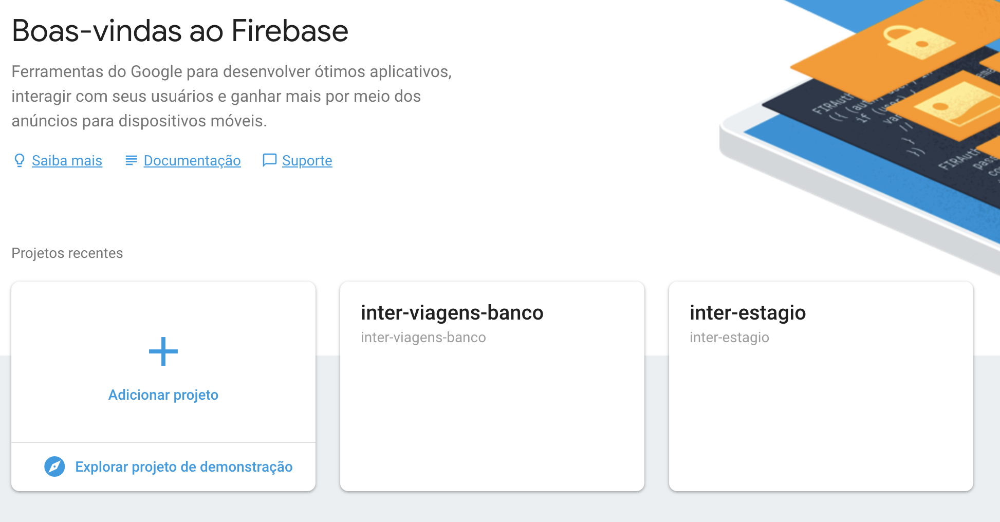
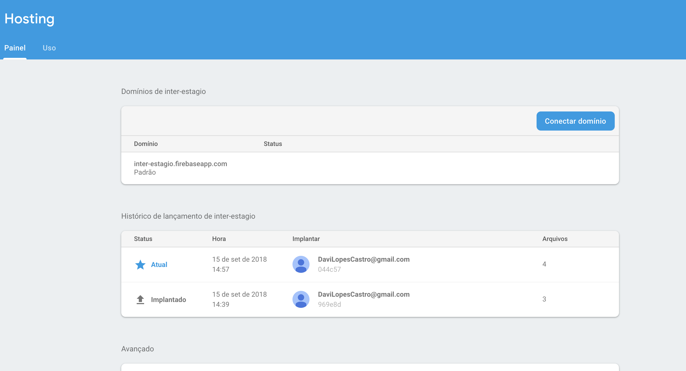
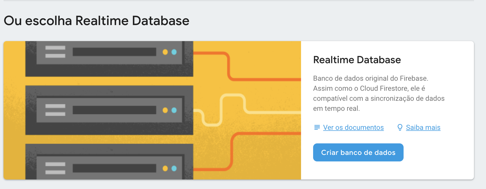
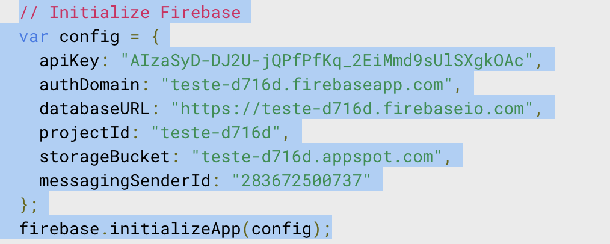

Este será o seu guia para construção do desafio. O primeiro e mais importe ponto é:
Relaxe, todos nós já estivemos na sua situação, e sabemos o quão dificil é, então procurem se divertir e lembrem-se que errar faz parte do aprendizado.
Nós temos diversas vagas, então não se preucupem com a competição. Deêm o seu melhor.
No seu ambiente de trabalho o sucesso é e sempre será resultado de um trabalho em equipe!!!
No decorrer deste guia vocês poderão encontrar novos termos, mas não se preucupem, pois não esperamos que vocês já os conheçam. O próprio guia irá desmistificá-los e vocês podem pedir ajuda a qualquer momento.
Bora para a parte prática!!! O desafio possui duas partes, uma de desenvolvimento e outra de criação/especificação. O segredo é dividir para conquistar!!!
O que iremos utilizar:
Internet
Firebase
Javascript
Html
Css
Visual code
Node(npm)
Papel e caneta
Vocês irão construir um novo produto para o Banco Inter, chamado Inter Viagens. Este produto oferecerá diversas funcionalidades relacionadas à viagens aéreas.
O desenvolvimento de software morderno é realizado de forma incremental, ou seja, criamos pequenas versōes funcionais do nosso produto que agregue valor para nossos clientes.
A primeira versão funcional do nosso produto será a construção de um buscador de passagens aéreas. Vocês irão desenvolver esta parte.
Como sugestão, vocês deverão criar um programa de fidelidade para o Inter Viagens (Exemplos: Smiles, Km de vantagem, Clube azul).
Para documentar os requisitos levantados, poderão utilizar recursos como:
Estória de usuário - Descrição simples da necessidade, sob o ponto de vista do usuário.
Diagramas - Diagrama de atividade, sequência, etc.
Protótipos - Protótipos de tela.
Buscar passagens:
Eu como cliente desejo buscar passagens aéreas para facilitar o meu dia a dia na compra de passagens.
Critérios de aceitação:
O cliente deverá informar o aeroporto de origem.
O cliente deverá informar o aeroporto de destino.
Após a busca o sistema deverá exibir para o cliente o resultado da mesma.
Dicas:
A segunda fase do nosso projeto já pode ser iniciada!!!
Esta é provavelmente a primeira estória de usuário que vocês viram na vida. Não se preucupem com a perfeiçao, o ótimo é inimigo do bom.
Para as pessoas que irão construir a especificação, deêm uma olhada no último item deste guia "Bonus".
Lembrem-se: A internet poderá ser utilizada a qualquer momento.
Como já dito, html e javascript serão utilizados para o desenvolvimento do nosso produto.
O firebase será utilizado para hostear a aplicação e também como base de dados.
Acessar ( Caso vocês não possuam uma conta no google, chegou o momento haha!)
Ir para o console 
Criar um novo projeto.
Abra o powerShell do windows.
Aqui utilizaremos o gerenciador de dependências do node o npm.
Verificar se o node está instalado.
npm help
Verificar se o utilitário de linha de comando do firebase está instalado.
firebase help
Caso o firebase não esteja instalado.
npm install -g firebase-tools
Acesse o firebase, clique em hosting e siga o tutorial.
Basicamente
firebase login
firebase init
firebase deploy
Ao rodar o commando firebase init vocês deverão selecionar "Database e Hosting" e isto irá criar um projeto inicial. O terminal permitirá que vocês selecionem o projeto desejado. Quando o terminal solicitar "Configure as a single-page app", selecione "y".
Após rodar o comando deploy o projeto será hostiado no firebase. Vocês poderão conferir acessando hosting e clicando no dominio.

Acessar a pasta public do seu projeto.
Abrir o arquivo index e alterar conforme link. O html no link disponibilizado é apenas para auxílio, não precisa ser necessariamente seguido. Este index.html já está configurado com as dependências do firebase e bootstrap.
O bootstrap é totalmente opcional.
Para facilitar a busca do nosso cliente utilizaremos um componente de autoComplete. Vocês não precisarão desenvolver este componente, apenas utilizá-lo.
Vocês deverão criar um arquivo chamado autoComplete.js e autoComplete.css.
Acesse para pegar o conteúdo do arquivo autoComplete.js
Acesse para pegar o conteúdo do arquivo autoComplete.css
Adicionar o autoComplete.js e autoCompletye.css no index.html
Utilizaremos um recurso extremamente interessante do firebase: o seu banco de dados em tempo real.
Acesse o firebase e clique em database
Escolha Realtime database

Criamos uma pequena base de dados para vocês. Segue o link do json a ser importado no firebase
O desenvolvimento será feito praticamente na sua totalidade utilizando dois arquivos, o index.html e o main.js (ops ainda criamos o segundo).
Criar um arquivo chamado main.js e importar o mesmo no index.html
Para nossa aplicação funcionar integrada ao firebase precisamos de algumas configurações.
O firebase suporta aplicações web, android e ios, no nosso caso vamos selecionar web.
Será necessária a utilizaçaão do código que o firebase fornecerá. Vocês deverão criar uma função dentro do arquivo main.js com este código.

Seguem abaixo exemplos de como criar uma function utilizando a nova versão do javascript (se não ficar claro como utilizar, o google está sempre ai).
// Definição de uma função
const interHelloWordFuncaoSoma = (x, y) => {
return x + y
}
const interHelloWordFuncao = () => {
console.log('Hello World');
}
//Executando a função
interHelloWordFuncaoSoma(1, 2) // 3
interHelloWordFuncao(); // Hello World
O browser utiliza o DOM para renderizar os componentes.
Segue o código que poderá auxiliar neste processo.
document.onreadystatechange = () => {
if (document.readyState === 'complete') {
//Colocar código que será executado após o DOM terminar de carregar.
}
};
Dicas:
Utilizem o máximo possīvel de funcões para separar o seu código. Além de mais legivel, isola melhor as responsabilidades.
Para que nosso cliente possa escolher quais aeroportos ele pode viajar, precisamos buscar os dados de nossa base!!!
let refDb = firebase.database().ref('valorBuscado');
refDb.on('value', function (snapshot) {
let valorDados = snapshot.val();
//Codigo a ser executado após callback
});
Quando pedimos o firebase para nos disponbilizar os dados, ele não o faz de forma síncrona. No momento em que o firebase estiver pronto para disponbilizar os dados, ele irá fazer um "callBack". Na prática o código dentro do método "on" só será executado quando o firebase estiver pronto.
Lembrem-se: Ao realizar a busca, vocês irão recuperar um array de objetos.
Vocês provavelmente precisarão trabalhar o objeto retornado pelo Firebase. Existe um método chamado "map" que pode ser útil.
// O que voce tem
const pessoas = [
{ id: 20, nome: 'Captain Piett' },
{ id: 24, nome: 'General Veers' },
{ id: 56, nome: 'Admiral Ozzel' },
{ id: 88, nome: 'Commander Jerjerrod' }
];
// O que voce precisa
[20, 24, 56, 88]
let ids = pessoas.map(pessoa => {
return pessoa.id;
});
Precisaremos construir uma função no main.js para buscar as passagens e uma forma de acioná-la.
Uma das maneiras é criar um botão com o evento html de "onClick" Html evento de clique
Para buscarmos as passagens precisamos das informações preenchidas pelo nosso cliente. Logo, precisaremos do valor preenchido no DOM!!
document.getElementById("idElemento").value;
Lembrem-se: O elemento DOM irá apenas retornar o nome da cidade. Como vocês vão perceber as passagens não possuem o nome da cidade, apenas o código do aeroporto.
Para realizarmos a busca das passagens precisamos que as informações preenchidas pelo nosso cliente, objeto de aeroportos e objeto de passagens se encontrem. O método filter poderá auxiliar.
let pessoas = [{
nome: "Maria",
bairro: "Castelo",
idade: 15
},
{
nome: "Jose",
bairro: "Buritis",
idade: 20
},
{
nome: "Bruna",
bairro: "Buritis",
idade: 20
}];
// O metodo filter sempre retorna um array, mesmo que o resultado seja apenas um resultado;
// Caso seja necessario podemos pegar apenas a 1 posicao utilizando [0];
let pessoa = pessoas.filter(p => p.nome === "jose")[0];
console.log(pessoa.bairro);
//Filtramos a pessoa desejada e agora podemos ter acesso as propriadades da mesma
//Maneira direta
pessoas.filter(p => p.nome === "jose")[0].bairro;
// Outra maneira de utilizar o metodo filter
let pessoasFilter = pessoas.filter(pessoa => {
return pessoa.bairro === "Buritis" && pessoa.idade === 20;
});
Dicas:
Lembrem-se que os dados de passagens estão no firebase.
O objeto aeroportos recuperado do firebase possui o campo "city".
Os objetos passagens e aeroportos possuem o campo "code" em comum.
Depois de buscarmos os dados precisamos exibi-los para o nosso cliente
Uma das maneiras seria exibindo uma tabela. Sinta-se a vontade para inovar.
//Uma das maneiras de criar elementos no DOM, utilizando javascript
let tabela = document.createElement("TABLE");
// Como atribuir uma classe ao elemento tabela, de uma olhada nas classes de tabela do bootstrap
tabela.className = "MinhaClasse1 MinhaClasse1-borda";
Para criação das linhas e colunas desta tabela dê uma olhada no artigo https://www.w3schools.com/jsref/met_table_insertrow.asp
O método forEach pode ser muito interessante para iterarmos sobre arrays.